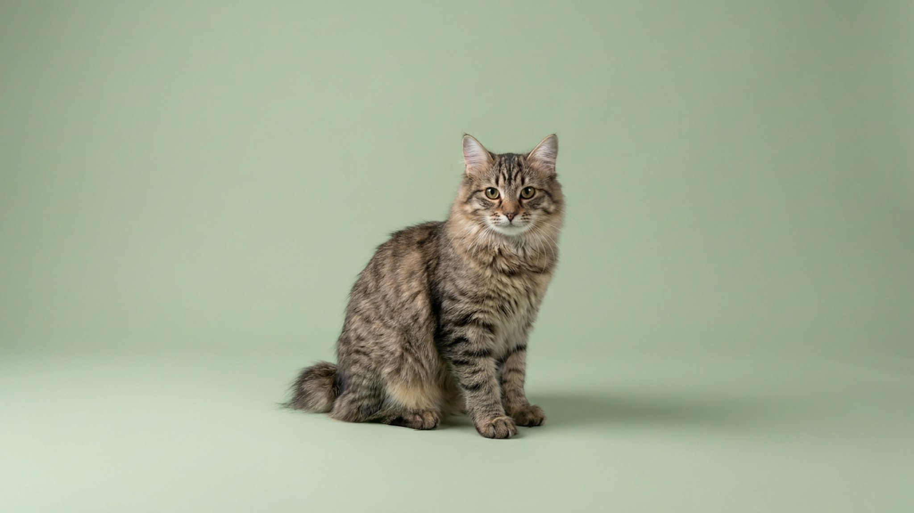

Вы бросаете скомканный носок — и кошка несётся за ним, приносит в зубах и роняет к ногам, ожидая повтора. Так ведёт себя курильский бобтейл: приносит игрушки, отзывается на имя, лезет в раковину под струю воды и встречает вас у двери. За «собачьим» характером стоит островное происхождение — и несколько особенностей, которые лучше знать до того, как взять котёнка. Разбираем, каким он окажется в квартире.
🐾 Первая помощь — всегда под рукой
AnimaLife подскажет, что делать в тревожной ситуации с питомцем ещё до визита к врачу. Откройте в один тап.
Курильский бобтейл — аборигенная порода с Курильских островов, а не выведенная искусственно. Его короткий хвост-помпон из 2–10 позвонков — природная особенность, закреплённая изоляцией. Формой хвоста ни одна кошка не повторяет другую: у каждой он свой, как отпечаток. Хвост подвижный, кошка активно им «разговаривает» — просто выглядит это иначе, чем у длиннохвостых.
Сложение крепкое, задние ноги длиннее передних — отсюда мощный толчок и высокие прыжки. Шерсть бывает короткой и полудлинной, но обе почти без выраженного подшёрстка-«ваты», поэтому колтуны образуются реже, чем у пушистых пород.
Островной предок добывал еду сам, включая рыбу из воды, — отсюда набор повадок, нетипичных для домашней кошки:
Это активная, «разговорчивая» и контактная кошка — ей нужно участие, а не просто миска и лежанка. Заскучавший бобтейл сам придумает себе занятие: заберётся на шкаф, откроет ящик, устроит забег по квартире. Дайте ему высокие полки и комплекс для лазания, игрушки-головоломки и хотя бы 10–15 минут совместной игры в день. Одиночество переносит хуже многих пород, поэтому надолго оставлять его в пустой квартире не лучший вариант.
С детьми и другими животными обычно ладит, но знакомить всё равно стоит постепенно, на нейтральной территории и без спешки. Крепкая психика — не повод пропускать нормальную адаптацию.
Уход несложный: вычёсывать раз в неделю (в период смены шерсти чаще), стричь когти, чистить уши по мере загрязнения, следить за зубами. Порода развивалась в суровом климате и в целом крепкая, но «аборигенная» не значит «неуязвимая»: плановые осмотры, вакцинация и контроль веса нужны так же, как любой кошке. График прививок и профилактику обсудите со своим ветеринаром.
🐾 Экономьте на лишних визитах к врачу
Сначала спросите AI-ветеринара в AnimaLife — часто этого достаточно, чтобы понять, нужен ли визит к врачу.
🐾 Понравился разбор?
Подпишитесь на канал — каждый день разбираем по одному тревожному симптому у кошек и собак: что в пределах нормы, а когда пора к врачу. Подпишитесь, чтобы не пропустить разбор, который может спасти здоровье вашего питомца.
Курильский бобтейл — кошка для тех, кто хотел «немного собаку в кошачьем теле»: преданную, деятельную и включённую в жизнь семьи. Дайте ей нагрузку и общение — и получите компаньона, который встречает у двери.
Материал носит информационный характер и не заменяет очную консультацию ветеринара.